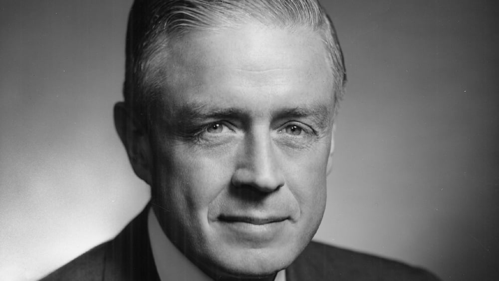

American businessman Thomas John Watson Sr., who led IBM as chairman and CEO until his death on June 19, 1956, was born on February 17, 1874. From 1914 through 1956, he managed the company's expansion into a rising power. John Henry Patterson's training at NCR influenced Watson in creating IBM's management philosophy and organizational culture. He transformed the business into a highly successful sales organization that was heavily dependent on punched card tabulating equipment. He was a prominent self-made manufacturer who died in 1956 and was praised as the world's finest salesman. He was also one of the richest men of his day.
| Birth | Death |
|---|---|
| February 17, 1874 | June 19, 1956 |